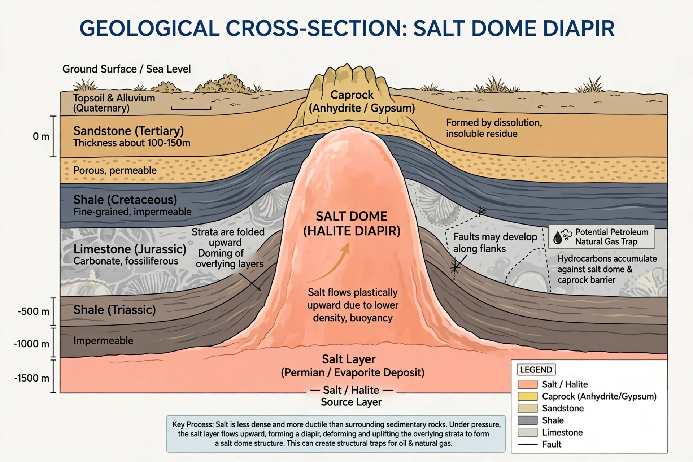

A salt dome is a type of structural dome formed when salt (or other evaporite minerals) intrudes into overlying rocks in a process known as diapirism. Salt domes are important in petroleum geology because the impermeable salt can trap oil and gas, and they are also sources of salt, sulfur and potash, and are used for underground storage.
Salt has a density of about 2.2 g/cm³, lower than compacted sedimentary rock, and unlike most rocks it flows plastically under sustained pressure. When a thick salt layer — deposited in an evaporating sea, such as the Jurassic Louann Salt of the Gulf of Mexico basin — is buried under kilometres of sediment, the buoyancy of the low-density salt makes it unstable. The salt rises in pillars and mushroom-shaped diapirs, arching, faulting and piercing the strata above it. Growth may continue for tens of millions of years, at rates comparable to fingernail growth.
A mature salt dome has a core of nearly pure halite, often capped by a cap rock of anhydrite, gypsum and calcite formed by dissolution of the salt top. In the Gulf Coast of the United States, microbial action on hydrocarbons in contact with cap rock produced native sulfur deposits, historically mined by the Frasch process. Salt glaciers (namaghers), where salt extrudes at the surface and flows downhill, occur in arid regions of Iran.
The petroleum industry discovered the association early: the 1901 Spindletop gusher near Beaumont, Texas — the well that launched the Texas oil boom — struck oil on the flank of a salt dome. Hydrocarbons accumulate in porous beds truncated and arched against the salt. Solution-mined caverns in salt domes provide large-volume storage for crude oil (including the U.S. Strategic Petroleum Reserve), natural gas and hydrogen, and have been proposed for compressed-air energy storage and nuclear waste disposal; the WIPP repository in New Mexico lies in a bedded salt formation.
Major salt-dome provinces include the Gulf Coast of the United States and Mexico, the North Sea and northern Germany, the Zagros Mountains of Iran, the Pricaspian Basin of Kazakhstan, and offshore Brazil and West Africa, where "pre-salt" oil fields lie beneath thick Aptian salt.